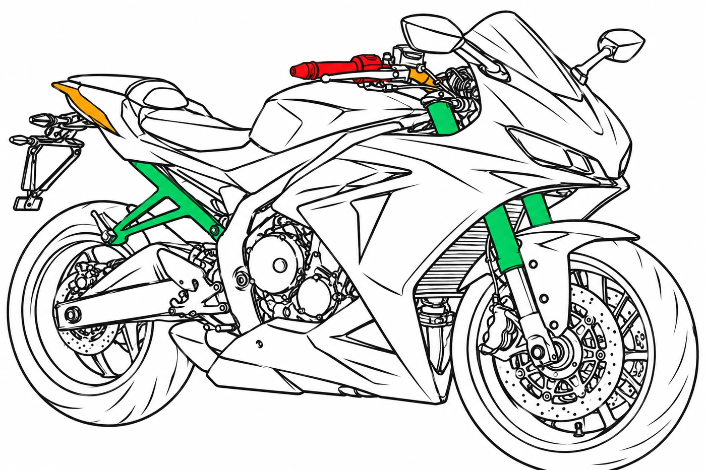

Trasporto moto professionale in Svizzera e dall'estero
Una moto non è solo un mezzo: è la cosa che il proprietario guarda prima di uscire di casa. Per questo la carichiamo con la stessa attenzione che ci metteremmo sulla nostra.
Sportiva da pista, touring, enduro, scooter da città o moto d'epoca: cambia la misura, non il metodo. Furgone chiuso con ferma-moto a pavimento, cinghie a cricchetto e protezioni sotto ogni punto di tiro.

Come leghiamo una moto
Una moto non si carica come un'auto. Va messa dritta, bloccata davanti e tenuta ferma su tutti e quattro i lati, altrimenti in frenata si muove e si rovina da sola. Per questo abbiamo un furgone attrezzato apposta: ferma-moto a pavimento, punti di ancoraggio e cinghie a cricchetto. Dentro la moto sta dritta da sola, al chiuso, e non la vede nessuno.
Poi vanno le cinghie, e lì conta dove le attacchi: se le metti nel punto sbagliato, in frenata la moto non si muove ma si rovina lo stesso.

- Telaio
- Supporti dei poggiapiedi
- Piastra inferiore della forcella
Sono le parti che reggono la trazione delle cinghie senza deformarsi.
- Manubrio, se la carena copre la piastra
- Maniglie del passeggero
La cinghia va tenuta il più vicino possibile agli steli: più si allontana, più il manubrio fa leva e rischia di piegarsi. Un manubrio da 22 mm è più delicato di un conico da 28.
- Frecce
- Manopole e leve
- Collettori di scarico
- Carene e plastiche
Si piegano, si crepano o si fondono. Una cinghia su una freccia costa più del trasporto.
Sotto ogni cinghia mettiamo una protezione, perché gli spigoli della moto tagliano il nastro e il nastro segna la vernice. E alle soste ricontrolliamo sempre: su un viaggio lungo le cinghie si allentano, è normale, basta ritenderle.
Trasporto moto da Italia a Svizzera
Il trasporto moto dall'Italia alla Svizzera è una delle richieste più frequenti: in Italia i prezzi sono più bassi e la scelta dell'usato è molto più ampia, e chi compra non ha voglia di tornare a casa su una moto appena acquistata, magari d'inverno.
Ritiriamo la moto all'indirizzo in Italia, la carichiamo, passiamo il confine e te la portiamo a casa. Se serve, ci occupiamo anche dello sdoganamento e dell'immatricolazione: sono pratiche che ho fatto di persona decine di volte.
Non solo Italia: ritiriamo anche da Germania, Francia e Austria.
Come trasportiamo le moto
La moto viaggia in piedi, bloccata davanti e tenuta su quattro lati. Mai appoggiata al cavalletto, mai legata al manubrio e basta.
Trasporto in furgone chiuso
È la soluzione migliore: la moto non prende pioggia, sale né sassi, e da fuori non si vede che cosa c'è dentro. Il furgone ha il ferma-moto fissato a pavimento e i punti di ancoraggio già al posto giusto.
Trasporto su carrello autoveicoli
Per gli spostamenti brevi o quando c'è fretta usiamo il carrello aperto, con la stessa cura nel fissaggio. Costa meno e si carica più in fretta.
Noleggio furgone per trasporto moto
Se preferisci fare da solo, noleggiamo il furgone con le cinghie e il ferma-moto già a bordo: Jumpy a CHF 80.- al giorno, Ducato a CHF 120.-.
Sulla pagina del noleggio furgoni trovi misure, prezzi e disponibilità.